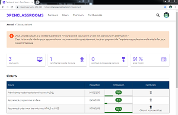
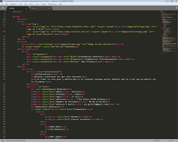
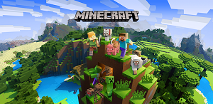
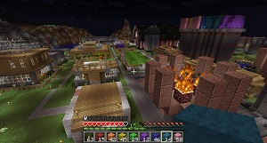
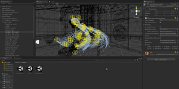

Présentation
Bonjour, je suis Gael Golitin, bienvenue sur mon site internet.
Je suis en terminal, j'ai 17 ans et je suis passioné d'informatique depuis mon enfance.
J'ai créé ce site pour y mettre mon cv et rajouter quelques petits détails que je n'est pas pu mettre sur le CV papier. Je l'ai coder entièrement a la main en HTML et CSS.
Information Générale
Nom : Golitin
Prénom : Gaël
Age : 17 ans
Adresse : 3 Rue Alain 45100 Orléans
Numéro de Portable : 06.84.43.81.05
Adresse E-mail : gl.golitin@gmail.com
Experience Générale
Formation
| Année |
Cursus scolaire |
| 2016-2017 |
2nd Général |
| 2017-2018 |
1er STMG |
| 2018-2019 |
Terminale STMG option Mercatique |
Experiences Professionelles
| Année |
Entreprise |
Adresse |
Durée |
| 2017 |
Stage en entreprise en agroalimentaire : Boucherie CHAU |
Avenue de la Bolière, 45100 Orléans |
1 semaine |
| 2015 |
Stage en entreprise en agroalimentaire : Boucherie CHAU |
Avenue de la Bolière, 45100 Orléans |
1 semaine |
(Oui c'est le même stage)
Diplôme
:
- Brevet des collèges
- Baccalauréat(en fin d'année)
Compétences
HTML/css
La plupart de mes connaissances en HTML proviennent du site openclassroom.

Pour l'instant, pour coder en HTML/css, j'utilise le logiciel Sublime texte 3.

JAVA
Mes quelques connaissances en JAVA proviennent de la création de mod pour le jeu Minecraft.


Je peut :
- Appeler des variable/modifier leurs valeurs
- Coder et appeler des fonction/modifier leurs propriétés
- Coder des boucles
J’utilisait aussi sublime texte 3 pour coder en JAVA
(Les mods sont des ajout créé par les joueurs, ils ne sont pas officiels. Le jeu minecraft est coder en java, les mods le sont donc aussi).
C++
A l’époque, j’ai appris sur le site du zero. Je voulais faire le remake de mon jeu d'enfance préféré (Dragon quest IX Les sentinelles du firnament) mais je n'est pas pu réussir car mon PC n'étais clairement pas asser puissant.
Maintenant Je ne connais plus que la syntaxe.
Je voulait utiliser l'IDE de Unity 3D, un moteur graphique.

(Les remaks de jeu sont pareil que les remaks de films : on prend le jeu qui est généralement ancien et on le remet a neuf avec les standarts actuel. Généralement ce sont des grosses boites qui font les remake car sa prend du temps mais seul sa reste largement possible).
{kind=link}
{kind=link}
{kind=link}